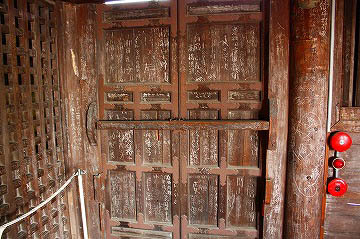

受験シーズン真っ盛りの今日この頃、受験生の皆さんはいかがお過ごしだろうか。
受験勉強の合間に当サイトをご覧頂いている受験生諸君におかれましては、ちょっぴり耳寄りな合格祈願のお寺情報を独観お兄さんが教えちゃうゾ！
…ただし関西限定ですけど…
堺市に家原寺という合格祈願の寺がある。
合格祈願といえば湯島天神、太宰府天満宮、阿倍文殊院等々を挙げるまでもなく天神さま系と文殊さま系に分かれる。
ここは文殊の神様。
ついでに奈良の大仏建立プロデューサー行基の生まれた寺としても有名だ。
落書き寺と呼ばれていた。
そんな由緒正しき寺、家原寺。ちなみに家原と書いて「えばら」と読む。
周辺には宅地や団地が多く、緑が少ない印象だが、この寺の境内は緑も多く、周辺住民の憩いの場、といった雰囲気に溢れている。

とはいえ、そこは元祖大仏コンサルタント（プロデューサーでしたっけ？）の行基が生まれた寺。
巨大なキャンプファイヤーのような日本最大の護摩壇や平成生まれの三重塔などがあり、そんじょそこらの寺とはチョット違いますよオーラを濃厚に漂わせている。
マニ車を搭載した小屋（用途不明）やじっとり濡れたお地蔵さんなど、取り立てて変だ、とは云わないまでも一寸づつ感覚がずれていく、そんな雰囲気も境内には満ちている。

そんな家原寺の本堂がこちら。
なにやら白い布が大量に貼られている。
最初、日の丸の小旗が貼られているのかと思ったのだが、よく見ればお寺のマークなのだろうか、梅のような紋が染め抜かれた無数のハンカチが本堂の壁という壁を埋め尽くしていたのだ。

聞くところによると、この寺はハンカチ寺と呼ばれているそうだ。
本尊が文殊菩薩なところから受験合格祈願の寺としてこのような有様になってしまったという。
参拝者はハンカチに希望校を書き、合格を祈願する。
訪れた時期は受験シーズンも終わり、どちらかというとお礼参りのハンカチの方が多かった。
…さすがお礼参りをしにくるだけあって、いわゆる難関校と呼ばれる学校名が多く見られた。
ついでに関西のお寺なのに東京の高校などの学校名もちらほら。

もちろん、合格祈願の寺なので入学試験だけでなく各種試験のお願いも随時受け付けております。
って私は寺のスタッフでもなければ文殊サマの使いでもないので断言は出来ませんが、そういう事になっているようです。

↓こちらは（奉納者の名前は消してあります）外国人の名前が書かれていた。
進級試験合格
ロナウド（仮名）
ロナウド（仮名）にとってよい方向によろしくお願いします。
文面から想像するに、ロナウド（仮名）さんの知人か友人、はたまた恋人が進級試験に合格するようにハンカチを奉納したのだろう、と想像できる。
がんばれよ。ロナウド（仮名）。
鍼灸試験も結構難しいと聞いた事がある。合格おめでとうございます。
大阪府警か警視庁ですか…キャリア組ですね。室井さん。
勉強をがんばれる
ファインプレーのできますように
かぜをひかないように
…欲張りすぎだし、勉強をがんばれる、じゃなくてがんばる、だろ！（ｂｙ文殊菩薩）
こんなハンカチだらけの家原寺だが、かつては


神なき時代の新しき信仰、なのに最終的には神頼み。つか文殊頼み。

ご覧の通り、チョークでビッシリ願い事（主に志望校）が書かれていたのだ。
お寺さんの話によるとあまりにもチョークでの落書きが多いので（ってお寺が容認したんだけど）毎年外せるハンカチにしたのだとか。

見れば軒下や天井近くにまでチョークで名前や志望校などが書かれている。
あんな高いところに一体どうやって書いたんだろう…
本堂内には五角形のダルマで合格ダルマの絵馬。
そしてその下にはそろばんが奉納されている。

地球全圖、というタイトルの奉納額。何を願ったのだ？世界征服祈願？
昭和52年の貼り紙。受験戦争という言葉が生まれたのはこの頃じゃなかっただろうか。
気合満点のお願いだが、テストの結果はバリーグッドだったのだろうか。
…お願い以前に恥さらしだぞ。3年8組51番。
奉納した人は今や40代半ば。バブルは楽しかったかい？君の人生はバリーグッドかい？
本堂の前にはたくさんの使用済み合格祈願お守りが奉納されていた。
まあ、それにしても随分色んなお守りがあるんですね〜。
ある人が、現代の日本社会において受験は宗教の代わり、極論すると宗教そのものだ、と述べていた。
ブランド校に盲目的に群がる親の意向と決して安くない授業料を眉ひとつ動かさず徴収する学習塾、大した授業もしないで胡坐をかいてふんぞり返っている学校が織り成す滑稽で不条理なドタバタ劇。
確かにカルトと呼ばれる教団に信者が何の疑いもなく金を積んでいるのと同じ図式に思える。
まあ、受験が宗教そのものというのはいささか言いすぎかもしれないが、確かに頼りどころのない今の日本人の数少ない心の支えになっているのは否定できない。そんな学歴社会をバカバカしいと一蹴することもできるが、できない人を責めることもできない。


この寺の根本的な違和感はそんなパラドックスが原因なのだろう。

…というわけで受験生の皆さん、神様よりも信じるなら自分を信じなさい。
少なくとも受験に関しては、ね。
2008.0.5